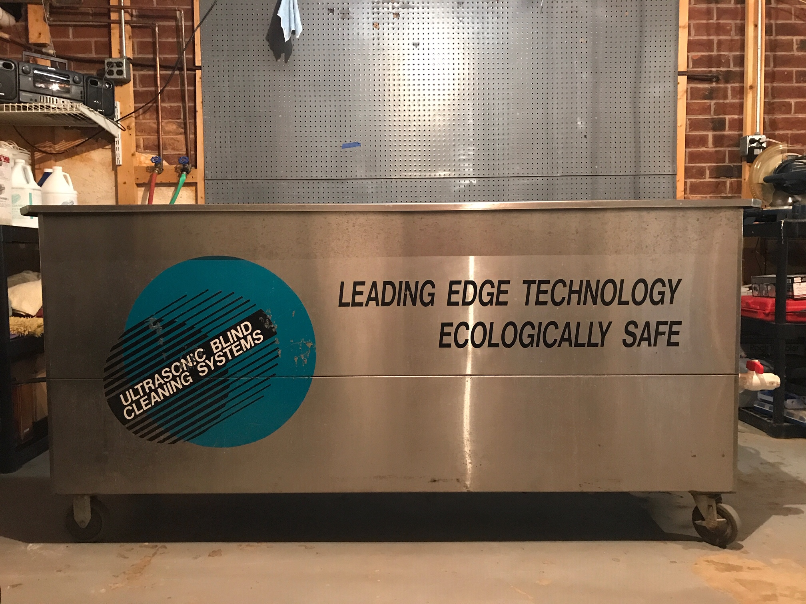

We clean blinds for residential homes and commercial businesses!
Have you ever tried cleaning your blinds and they didn't come out as clean as you wanted? Clean A Blind will make sure you struggle no more! By visiting our site, you can find all of the information you need about us to ensure that you will have your blinds looking brand new.

Pick up
Clean
Deliver
Same day service!
At Clean A Blind, we know that our customers can have busy schedules. We provide our service as fast as possible and can have your blinds picked up, cleaned, and delivered all in one day. For more information on how to get your blinds cleaned, contact us by visiting the "About us" page at the top.